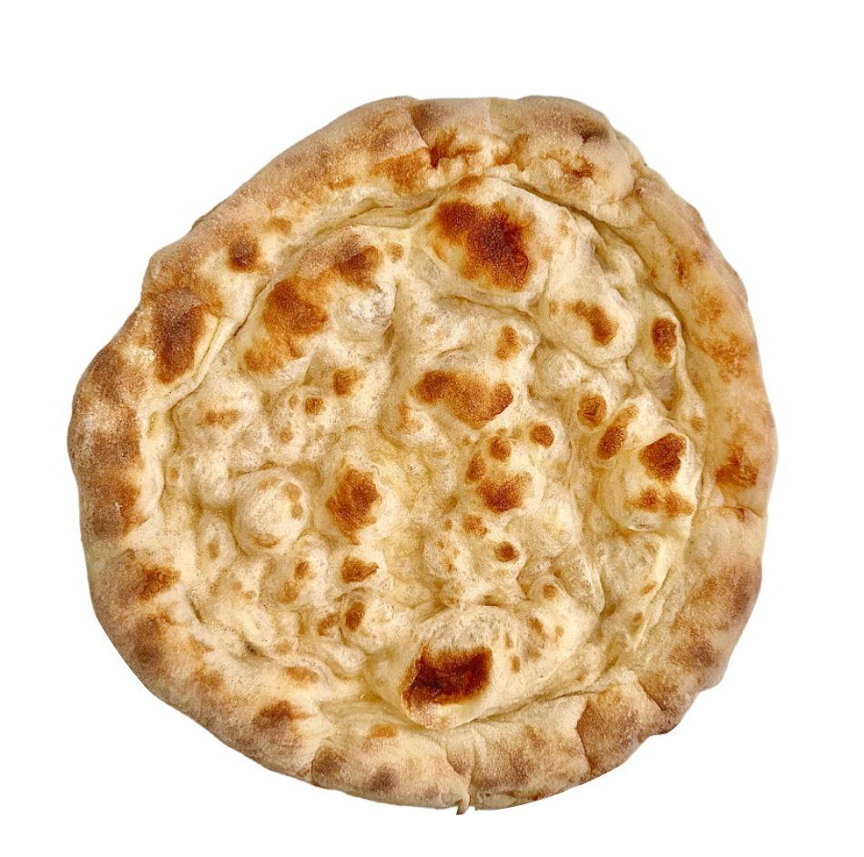
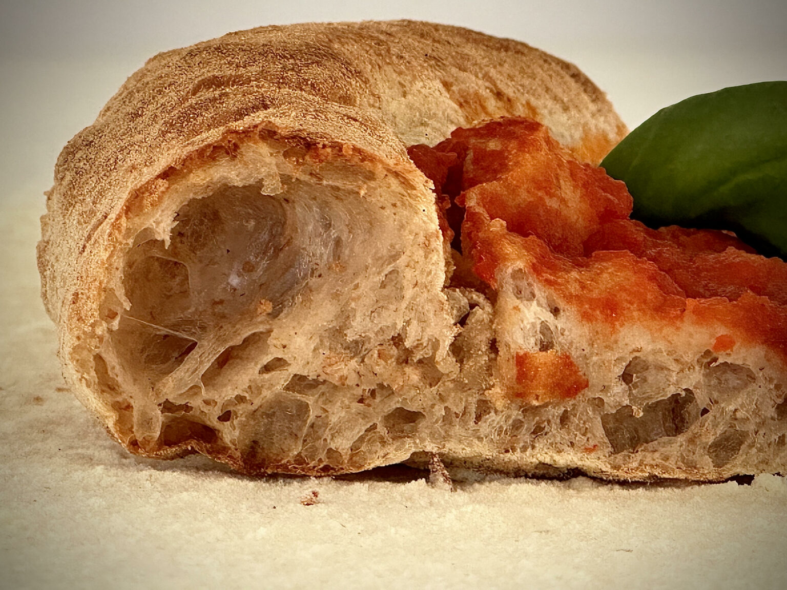
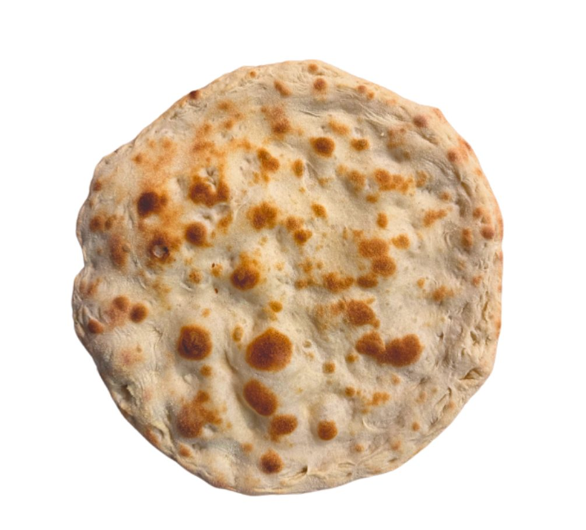
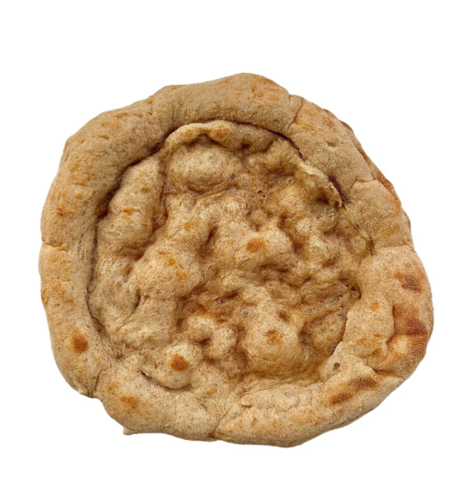
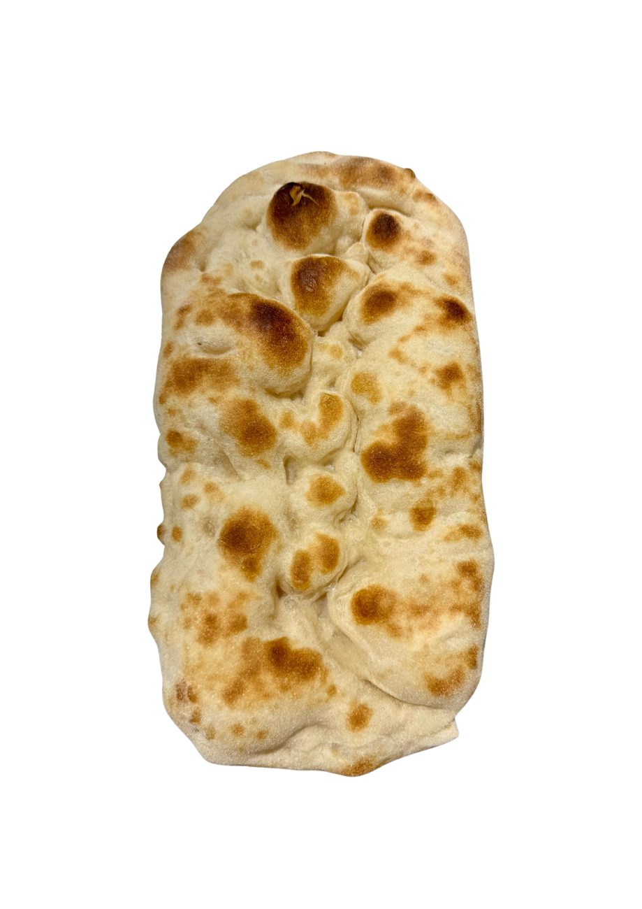
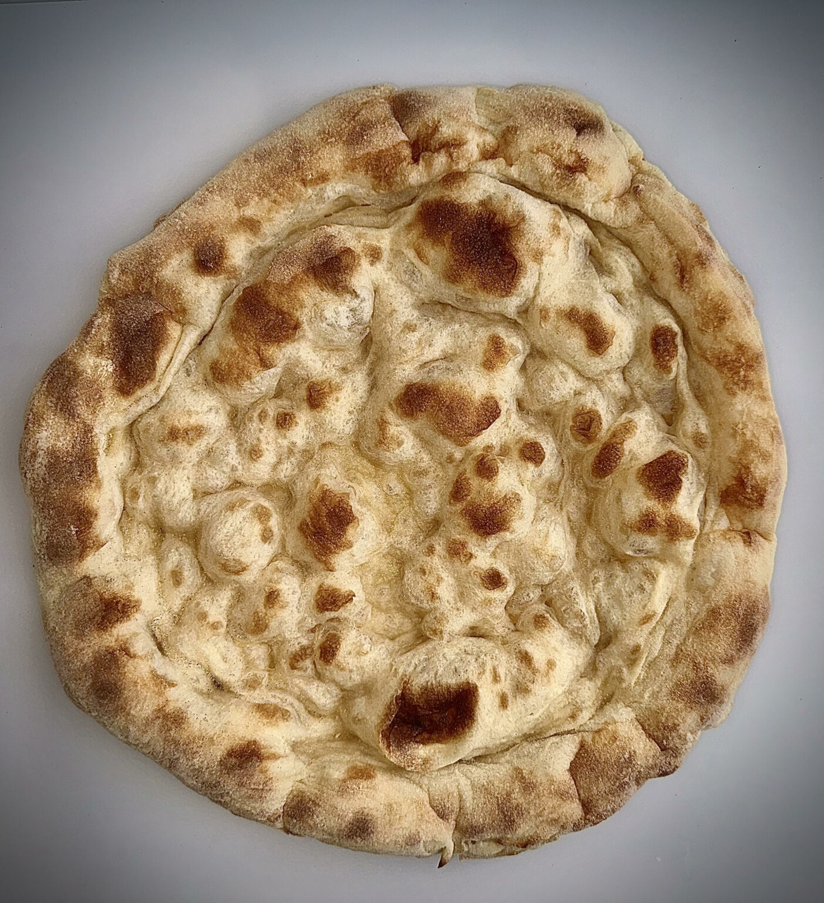

Base ‘Classica’
kr 65,00
Fri frakt for bestillinger over 699 nok!
Revolusjoner menyen din og din kulinariske opplevelse med våre håndlagde pizzabunner! Perfekte både for restaurantløsninger og matglade hjemme.

Holdbarhet opptil 50 dagerShop

kr 65,00

kr 99,00

kr 69,00

kr 109,00

Hvorfor velge våre pizzabunner?
Spar tid og lever eksepsjonell kvalitet hver gang! Våre ferdige pizzabunner er den ideelle løsningen for de som ønsker å servere en autentisk og velsmakende pizza uten stresset med å lage deigen selv.
Din suksess er vår prioritet!Slutt å bruke tid på deiger, heving, mel og spesialutstyr! Våre klare-til-bruk pizzabunner lar deg fokusere på det som virkelig betyr noe: å glede kundene dine og skape spesielle øyeblikk.
Hver bunn er laget for hånd med førsteklasses ingredienser, noe som garanterer at du alltid kan tilby den samme, utmerkede kvaliteten.
Du trenger ikke spesialisert personale – hvem som helst kan raskt lære å bruke vårt produkt. Dette gjør at du kan redusere kostnadene uten at det går utover kvaliteten.
Bruk kun de bunnene du trenger, og reduser både svinn og kostnader. Regenerer kun det som er nødvendig.
Pizzabunnene kan oppbevares i romtemperatur, noe som sparer plass og kostnader. De har en holdbarhet på opptil 50 dager, noe som garanterer både friskhet og praktisk bruk. Perfekt for enhver anledning!
Våre pizzabunner gir deg fleksibiliteten til å realisere dine kulinariske ideer! Perfekte for restauratører og entusiaster, lar de deg lage unike og deilige pizzaer til enhver anledning.
Våre ingredienser
Hos Scrocchia80 er kvaliteten på våre pizzabunner vår høyeste prioritet. Vi er stolte av å bruke utvalgte, ferske og ekte ingredienser for å garantere et sluttprodukt som tilfredsstiller alles smak.
Vi bruker mel av høy kvalitet, malt på stein, for å gi våre pizzabunner en perfekt konsistens og autentisk smak. Utvalget av mel sikrer optimal heving og sprø skorpe.
Vann er en grunnleggende ingrediens for deigen. Vi velger rent og forurensningsfritt vann, som bidrar til å oppnå myk konsistens og jevn heving.
Vi bruker surdeig for å gi våre pizzabunner en unik smak og bedre fordøyelighet. Naturlig gjær fremmer langsom fermentering, som utvikler uforglemmelige aromaer og smaker.
Vi tilsetter havsalt for å forsterke smaken av ingrediensene og forbedre deigens struktur. Salt er essensielt for korrekt heving og for å balansere smakene.
En nøytral olje som sikrer optimal sprøhet og en jevn gyllen farge ved steking.
Vi tilbyr produkter uten konserveringsmidler og kjemiske tilsetningsstoffer. Alle våre ingredienser er naturlige og nøye utvalgte for å sikre en autentisk gastronomisk opplevelse.
Kombinasjonen av disse ingrediensene, bearbeidet med lidenskap og omtanke, gjør at vi kan lage pizzabunner som ikke bare er deilige, men også sunne. Hos Scrocchia80 forteller hver bit historien om tradisjon og kjærlighet til ekte matlaging.